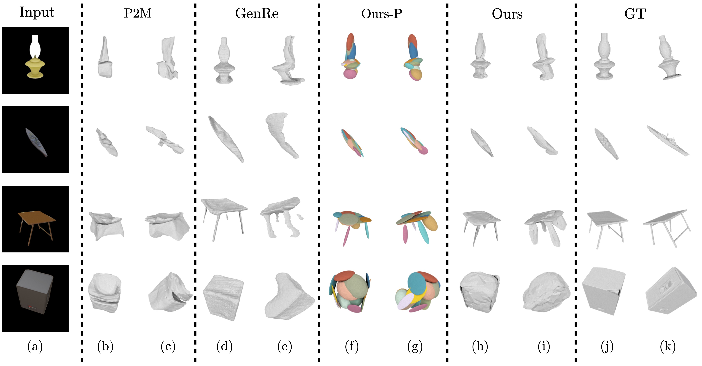
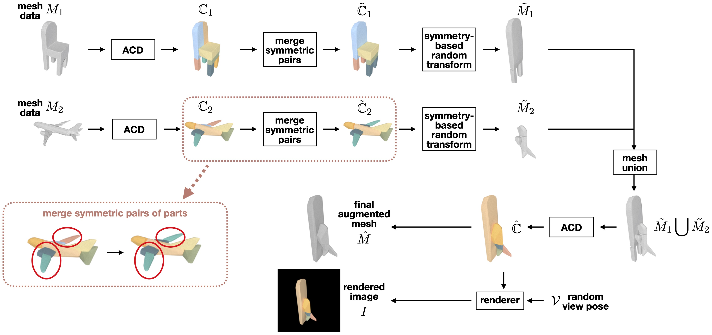
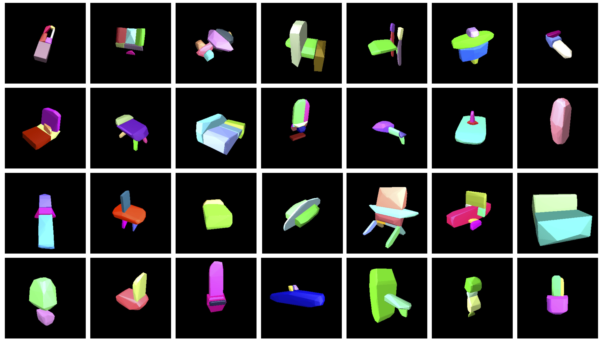

As most existing works of single-view 3D reconstruction aim at learning the better mapping functions to directly transform the 2D observation into the corresponding 3D shape for achieving state-of-the-art performance, there often comes a potential concern on having the implicit bias towards the seen classes learnt in their models (i.e. reconstruction intertwined with the classification) thus leading to poor generalizability for the unseen object categories. Moreover, such implicit bias typically stemmed from adopting the object-centered coordinate in their model designs, in which the reconstructed 3D shapes of the same class are all aligned to the same canonical pose regardless of different view-angles in the 2D observations.
To this end, we propose an end-to-end framework to reconstruct the 3D mesh from a single image, where the reconstructed mesh is not only view-centered (i.e. its 3D pose respects the viewpoint of the 2D observation) but also preliminarily represented as a composition of volumetric 3D primitives before being further deformed into the fine-grained mesh to capture the shape details. In particular, the usage of volumetric primitives is motivated from the assumption that there generally exists some similar shape parts shared across various object categories, learning to estimate the primitive-based 3D model thus becomes more generalizable to the unseen categories. Furthermore, we advance to propose a novel mesh augmentation strategy, CvxRearrangement, to enrich the distribution of training shapes, which contributes to increasing the robustness of our proposed model and achieves better generalization. Extensive experiments demonstrate that our proposed method provides superior performance on both unseen and seen classes in comparison to several representative baselines of single-view 3D reconstruction.

Single image 3D reconstruction on unseen classes. Each row from left to right: (a) the input RGB image, (b)(c) two views of Pixel2Mesh (P2M), (d)(e) two views of GenRe, (f)(g) two views of our predicted primtives, (h)(i) two views of our deformed result, and (j)(k) two views of the ground-truth shape, where (b)(d)(f)(h)(j) have the same viewing perspective as input RGB image and (c)(e)(g)(i)(k) show the different viewing angle of the reconstruction.

